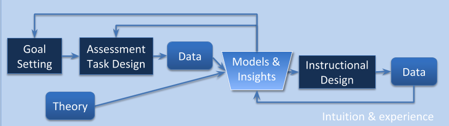
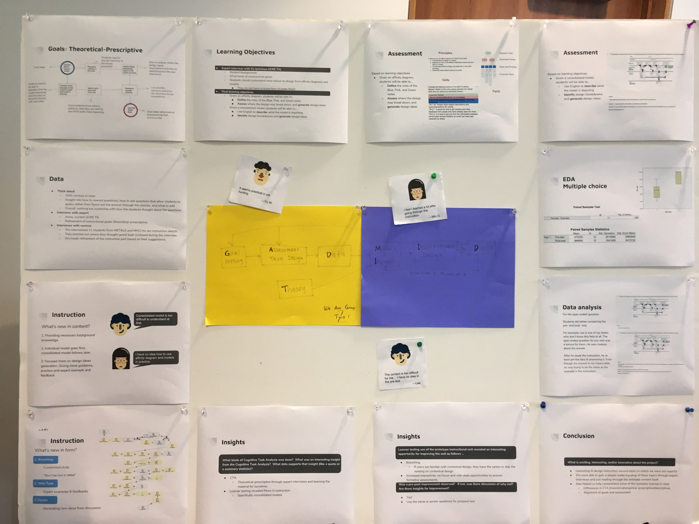

Instructional Unit on Designing from Affinities and Models
Background
This project was for the HCI class 05-823, E-learning Design Principles, taught by Prof. Ken Koedinger. For this project, we were divided into groups balanced based on our individual backgrounds and were tasked with redesigning one unit from another HCI class, “User-centered Research Evaluation” (abbreviated as UCRE).
My group was assigned to redesign the first instructional unit, Designing from Affinities and Models. Through contextual inquiry, cognitive task analyses, as well as the other e-learning design principles and methodologies learned in class, we were to craft an instructional unit with a pre-assessment and post-assessment, have other students take our instructional unit, and report our findings and design process with a final poster presentation.
Process
The main process that we followed was based on this big picture of the instructional design process.

We first rewrote the learning objectives, created initial assessment questions, conducted think alouds with content novices to address any flaws on the assessment questions, then iterated on our learning objects and assessment questions before finally designing our instruction based on further expert and novice interviews, etc.
Through interviewing students who were taking UCRE or who had taken it, we found that there was a general confusion about the purpose of learning to design from affinity diagrams and models, and what exactly they are used for. From this, we decided to scope our instruction in the context of contextual design, and explain at the beginning of the unit where exactly everything fits under that model.
In addition, we chose to implement our instruction using LAMS. This platform allowed us to introduce branching and unique instruction interactions with future students.
For example, at the very beginning of the instruction, we ask users if they are already familiar with the process of contextual design. Based on their responses, those familiar with contextual design are allowed to skip an optional reading about contextual design, and those unfamiliar will be given the same reading.
Further, two interactive activities we included were forum questions and wiki questions. The forum and wiki questions both posed open-ended questions that were designed to provoke deeper thought. Both activities were designed to allow students to discuss the questions with each other. The wiki style activity allows students to directly edit the answer page (a la Wikipedia), where they can read other student’s answers before providing their own. In contrast, the forum style activity has a small forum where students may also engage in discussions with each other. The difference between this activity and the wiki-style one is that students cannot see anyone else’s answers until they click on a thread. This way, students are encouraged to think about the questions before they see everyone else’s answers.
Final Poster

The final instructional unit can be found here. LAMS, however, does require that users need an account to see it.
Reflection
The most obvious but interesting challenge was designing an instructional unit for topics in which we were not experts. But through expert interviews with current and past TA’s of the class, we were able to gain insight into what the most important things they intended for students take away from the unit. This also allowed us to better understand the content for ourselves, so we could design the appropriate instruction and assessments.
I also was able to more fully comprehend some of the concepts we were taught in class; I didn’t even realize that I had those gaps in my knowledge until we were working on this project. I know I can definitely take these skills and newly-gained knowledge forward in my future projects.